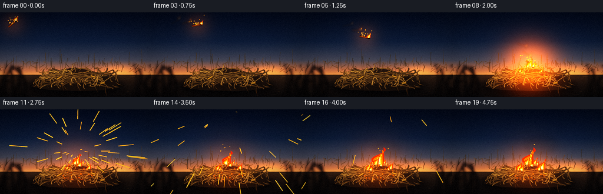
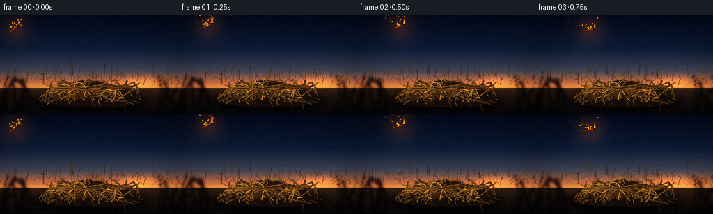

CODING AGENTS AS PIXEL WORLD MODELS
traex/DeepSeek-V4.1-Flash · material_0030
点击播放 · 原生 RGB 像素
逐轮保存的候选
回放视频、检查图与代码变化。
每份候选均可单独播放。实际图片检查记录在下方工具轨迹中。
候选 01播放与检查图
点击播放 · 原生 RGB 像素

展开代码变化
--- 上一保存版本
+++ 本次保存版本
@@ -0,0 +1,551 @@
+from __future__ import annotations
+
+import math
+from pathlib import Path
+
+import numpy as np
+from PIL import Image, ImageDraw, ImageFilter
+
+import artifact_io
+
+
+W, H = 256, 144
+N, FPS = 20, 4.0
+S = 4
+RW, RH = W * S, H * S
+ROOT = Path(__file__).resolve().parent
+
+
+def clamp(value, low=0.0, high=1.0):
+ return max(low, min(high, value))
+
+
+def smoothstep(a, b, value):
+ if a == b:
+ return float(value >= b)
+ t = clamp((value - a) / (b - a))
+ return t * t * (3.0 - 2.0 * t)
+
+
+def mix(a, b, t):
+ return tuple(int(round(x + (y - x) * t)) for x, y in zip(a, b))
+
+
+def rgba(color, alpha=255):
+ return tuple(color) + (int(alpha),)
+
+
+def scale_xy(point):
+ return (int(round(point[0] * S)), int(round(point[1] * S)))
+
+
+def bezier(points, steps=32):
+ points = np.asarray(points, dtype=np.float32)
+ t = np.linspace(0.0, 1.0, steps, dtype=np.float32)[:, None]
+ p = (
+ (1.0 - t) ** 3 * points[0]
+ + 3.0 * (1.0 - t) ** 2 * t * points[1]
+ + 3.0 * (1.0 - t) * t**2 * points[2]
+ + t**3 * points[3]
+ )
+ return p
+
+
+def draw_curve(draw, points, fill, width):
+ pts = [scale_xy(p) for p in points]
+ draw.line(pts, fill=fill, width=max(1, int(round(width * S))), joint="curve")
+ radius = max(1, int(round(width * S / 2)))
+ for x, y in (pts[0], pts[-1]):
+ draw.ellipse((x - radius, y - radius, x + radius, y + radius), fill=fill)
+
+
+def resized_layer(array):
+ return Image.fromarray(np.asarray(array, dtype=np.uint8), "RGB").resize((RW, RH), Image.Resampling.BICUBIC)
+
+
+def make_noise(rng, small_size, blur):
+ w, h = small_size
+ raw = rng.normal(0.0, 1.0, (h, w)).astype(np.float32)
+ image = Image.fromarray(np.uint8(np.clip(raw * 35.0 + 128.0, 0, 255)), "L")
+ image = image.filter(ImageFilter.GaussianBlur(blur))
+ return np.asarray(image, dtype=np.float32) / 255.0
+
+
+def build_background():
+ rng = np.random.default_rng(1907)
+ y = np.linspace(0.0, 1.0, H, dtype=np.float32)[:, None]
+ x = np.linspace(0.0, 1.0, W, dtype=np.float32)[None, :]
+
+ sky_stops = [
+ (0.00, np.array([17, 27, 43], dtype=np.float32)),
+ (0.34, np.array([35, 49, 68], dtype=np.float32)),
+ (0.57, np.array([86, 86, 94], dtype=np.float32)),
+ (0.69, np.array([177, 117, 86], dtype=np.float32)),
+ (0.74, np.array([218, 147, 92], dtype=np.float32)),
+ ]
+ stops_y = np.array([stop[0] for stop in sky_stops], dtype=np.float32)
+ stops_c = np.stack([stop[1] for stop in sky_stops], axis=0)
+ gradient = np.stack(
+ [np.interp(y[:, 0], stops_y, stops_c[:, channel]) for channel in range(3)],
+ axis=1,
+ )
+ sky = np.broadcast_to(gradient[:, None, :], (H, W, 3)).copy()
+
+ sun = np.exp(-(((x - 0.79) / 0.16) ** 2 + ((y - 0.69) / 0.10) ** 2) * 2.2)
+ sky += sun[..., None] * np.array([72, 35, 10], dtype=np.float32)
+
+ cloud = make_noise(rng, (44, 22), 3.0)
+ cloud = np.asarray(
+ Image.fromarray(np.uint8(np.clip(cloud * 255, 0, 255)), "L").resize((W, H), Image.Resampling.BICUBIC),
+ dtype=np.float32,
+ ) / 255.0
+ cloud2 = make_noise(rng, (18, 10), 2.0)
+ cloud2 = np.asarray(
+ Image.fromarray(np.uint8(np.clip(cloud2 * 255, 0, 255)), "L").resize((W, H), Image.Resampling.BICUBIC),
+ dtype=np.float32,
+ ) / 255.0
+ cloud_mask = np.clip((cloud - 0.45) * 1.8 + (cloud2 - 0.5) * 0.8, 0, 1)
+ cloud_mask *= np.clip((0.70 - y) / 0.32, 0, 1)
+ sky = sky * (1.0 - cloud_mask[..., None] * 0.28) + np.array([92, 92, 105]) * cloud_mask[..., None] * 0.28
+
+ ground_mask = y[:, 0] >= 0.735
+ g = np.clip((y[:, 0] - 0.735) / 0.265, 0, 1)[:, None]
+ ground = (
+ np.array([73, 54, 39], dtype=np.float32) * (1.0 - g[..., None])
+ + np.array([28, 23, 20], dtype=np.float32) * g[..., None]
+ )
+ ground = np.broadcast_to(ground, (H, W, 3)).copy()
+ soil_noise = make_noise(rng, (64, 32), 1.1)
+ soil_noise = np.asarray(
+ Image.fromarray(np.uint8(soil_noise * 255), "L").resize((W, H), Image.Resampling.BICUBIC),
+ dtype=np.float32,
+ ) / 255.0
+ ground += (soil_noise[..., None] - 0.5) * np.array([20, 14, 8], dtype=np.float32)
+ sky[ground_mask] = ground[ground_mask]
+
+ background = Image.fromarray(np.uint8(np.clip(sky, 0, 255)), "RGB").resize((RW, RH), Image.Resampling.BICUBIC)
+ draw = ImageDraw.Draw(background, "RGBA")
+
+ # Distant corn rows catch the last light at the horizon.
+ for row in range(42):
+ x0 = rng.uniform(-4, W + 4)
+ y0 = rng.uniform(85.0, 102.0)
+ height = rng.uniform(8.0, 24.0)
+ lean = rng.uniform(-3.0, 3.0)
+ color = mix((48, 42, 30), (99, 72, 42), rng.uniform(0.1, 0.85))
+ alpha = int(rng.uniform(90, 175))
+ points = [(x0, y0), (x0 + lean * 0.35, y0 - height * 0.5), (x0 + lean, y0 - height)]
+ draw_curve(draw, points, rgba(color, alpha), rng.uniform(0.45, 1.05))
+
+ for blade in range(85):
+ x0 = rng.uniform(-2, W + 2)
+ y0 = rng.uniform(86.0, 103.0)
+ length = rng.uniform(3.0, 11.0)
+ angle = rng.uniform(-1.25, 1.25)
+ x1 = x0 + math.sin(angle) * length
+ y1 = y0 - math.cos(angle) * length
+ color = mix((58, 47, 31), (122, 82, 43), rng.uniform(0.0, 1.0))
+ draw.line([scale_xy((x0, y0)), scale_xy((x1, y1))], fill=rgba(color, 135), width=max(1, S))
+
+ # Scattered straw on the soil.
+ for _ in range(120):
+ x0 = rng.uniform(0, W)
+ y0 = rng.uniform(104, H)
+ length = rng.uniform(2, 10)
+ angle = rng.uniform(-0.35, 0.35)
+ color = mix((68, 50, 32), (151, 111, 63), rng.uniform(0.0, 1.0))
+ draw.line(
+ [scale_xy((x0, y0)), scale_xy((x0 + length * math.cos(angle), y0 + length * math.sin(angle) * 0.3))],
+ fill=rgba(color, int(rng.uniform(40, 105))),
+ width=max(1, int(S * rng.uniform(0.45, 0.85))),
+ )
+
+ # Soft cast shadow under the heap.
+ shadow = Image.new("RGBA", (RW, RH), (0, 0, 0, 0))
+ sd = ImageDraw.Draw(shadow)
+ sd.ellipse(scale_xy((47, 112)) + scale_xy((210, 139)), fill=(10, 8, 7, 180))
+ shadow = shadow.filter(ImageFilter.GaussianBlur(5 * S))
+ background = Image.alpha_composite(background.convert("RGBA"), shadow).convert("RGB")
+ draw = ImageDraw.Draw(background, "RGBA")
+
+ # Low, dense silhouette of the pile before the individual stalks.
+ heap_poly = [(53, 126), (64, 114), (79, 106), (94, 101), (111, 96), (128, 94), (145, 97),
+ (161, 101), (179, 108), (194, 116), (202, 128), (176, 132), (145, 134),
+ (113, 133), (83, 132)]
+ draw.polygon([scale_xy(p) for p in heap_poly], fill=(47, 34, 24, 235))
+
+ # Heap fill: long, dry, curved corn stalks with shaded edges.
+ stalk_rng = np.random.default_rng(4421)
+ stalk_records = []
+ for index in range(72):
+ x0 = stalk_rng.uniform(55, 197)
+ x1 = stalk_rng.uniform(65, 202)
+ base_y = stalk_rng.uniform(112, 130)
+ crown_y = stalk_rng.uniform(96, 118)
+ arch = stalk_rng.uniform(-14, 8)
+ p0 = (x0, base_y)
+ p1 = (x0 + stalk_rng.uniform(-14, 18), base_y - stalk_rng.uniform(4, 17))
+ p2 = (x1 + stalk_rng.uniform(-16, 16), crown_y + arch)
+ p3 = (x1, stalk_rng.uniform(94, 119))
+ shade = stalk_rng.uniform(0.0, 1.0)
+ width = stalk_rng.uniform(0.75, 1.65)
+ stalk_records.append((p0, p1, p2, p3, shade, width))
+
+ stalk_records.sort(key=lambda record: (record[3][1], record[0][1]))
+ for p0, p1, p2, p3, shade, width in stalk_records:
+ points = bezier((p0, p1, p2, p3), steps=28)
+ outline = mix((38, 28, 20), (72, 49, 29), shade)
+ draw_curve(draw, points, rgba(outline, 235), width + 0.85)
+ body = mix((91, 66, 38), (178, 137, 76), shade)
+ draw_curve(draw, points, rgba(body, 240), width)
+ highlight = mix((129, 96, 53), (215, 178, 105), shade)
+ draw.line(
+ [scale_xy(p + np.array([-0.35, -0.35])) for p in points[3:-3]],
+ fill=rgba(highlight, 125),
+ width=max(1, int(S * 0.38)),
+ )
+ if stalk_rng.random() < 0.55:
+ node_i = int(stalk_rng.integers(7, max(8, len(points) - 6)))
+ nx, ny = points[node_i]
+ tangent = points[min(len(points) - 1, node_i + 1)] - points[max(0, node_i - 1)]
+ normal = np.array([-tangent[1], tangent[0]], dtype=np.float32)
+ norm = float(np.linalg.norm(normal)) or 1.0
+ normal /= norm
+ node = 1.5 + width * 0.6
+ draw.line(
+ [scale_xy((nx - normal[0] * node, ny - normal[1] * node)),
+ scale_xy((nx + normal[0] * node, ny + normal[1] * node))],
+ fill=rgba((55, 38, 24), 220),
+ width=max(1, int(S * 0.55)),
+ )
+
+ # Curled dry leaves make the heap read as corn residue rather than a generic haystack.
+ for _ in range(34):
+ cx = stalk_rng.uniform(62, 196)
+ cy = stalk_rng.uniform(98, 126)
+ length = stalk_rng.uniform(7, 17)
+ angle = stalk_rng.uniform(-1.5, 1.5)
+ bend = stalk_rng.uniform(-4, 4)
+ dx, dy = math.cos(angle), math.sin(angle)
+ root = np.array([cx, cy], dtype=np.float32)
+ tip = root + np.array([dx * length, dy * length + bend], dtype=np.float32)
+ side = np.array([-dy, dx], dtype=np.float32) * stalk_rng.uniform(1.0, 2.5)
+ mid = (root + tip) * 0.5 + side
+ leaf = [root, mid, tip, mid - side * 0.65]
+ fill = mix((106, 73, 37), (194, 154, 86), stalk_rng.uniform(0.0, 1.0))
+ draw.polygon([scale_xy(p) for p in leaf], fill=rgba(fill, int(stalk_rng.uniform(155, 225))))
+ draw.line([scale_xy(root), scale_xy(mid), scale_xy(tip)], fill=rgba((80, 53, 31), 145), width=max(1, int(S * 0.45)))
+
+ # A few exposed cobs anchor the material as corn.
+ for cx, cy, angle, length in [(101, 111, -0.52, 10.0), (158, 109, 0.30, 9.0), (174, 120, -0.12, 7.5)]:
+ dx, dy = math.cos(angle), math.sin(angle)
+ p0 = (cx - dx * length / 2, cy - dy * length / 2)
+ p1 = (cx + dx * length / 2, cy + dy * length / 2)
+ draw.line([scale_xy(p0), scale_xy(p1)], fill=rgba((54, 36, 22), 230), width=int(4.2 * S))
+ draw.line([scale_xy(p0), scale_xy(p1)], fill=rgba((144, 102, 45), 235), width=int(2.8 * S))
+ for k in range(4):
+ q = np.array(p0) + (np.array(p1) - np.array(p0)) * ((k + 0.7) / 4.8)
+ draw.ellipse(scale_xy((q[0] - 0.8, q[1] - 0.8)) + scale_xy((q[0] + 0.8, q[1] + 0.8)),
+ fill=rgba((210, 161, 71), 170))
+
+ # Foreground stalks are blurred to create depth without hiding the action.
+ foreground = Image.new("RGBA", (RW, RH), (0, 0, 0, 0))
+ fd = ImageDraw.Draw(foreground)
+ fg_rng = np.random.default_rng(809)
+ for _ in range(18):
+ if fg_rng.random() < 0.5:
+ x0 = fg_rng.uniform(-8, 46)
+ else:
+ x0 = fg_rng.uniform(214, 266)
+ p0 = (x0, 147)
+ p1 = (x0 + fg_rng.uniform(-8, 8), fg_rng.uniform(120, 140))
+ p2 = (x0 + fg_rng.uniform(-20, 20), fg_rng.uniform(95, 128))
+ p3 = (x0 + fg_rng.uniform(-20, 20), fg_rng.uniform(82, 121))
+ points = bezier((p0, p1, p2, p3), steps=25)
+ draw_curve(fd, points, rgba((24, 18, 15), 235), fg_rng.uniform(1.4, 3.8))
+ draw.line(
+ [scale_xy(p) for p in points[2:-2]],
+ fill=rgba((86, 62, 39), 115),
+ width=max(1, int(S * 0.55)),
+ )
+ foreground = foreground.filter(ImageFilter.GaussianBlur(2.2 * S))
+ background = Image.alpha_composite(background.convert("RGBA"), foreground).convert("RGB")
+ return background
+
+
+BASE = build_background()
+
+
+def draw_flame(draw, cx, cy, scale, phase, alpha=255, lean=0.0):
+ if scale <= 0:
+ return
+ wobble = math.sin(phase) * 0.18
+ layers = [
+ ((215, 45, 12), 1.00, 1.00, alpha * 0.60),
+ ((255, 105, 18), 0.72, 0.82, alpha * 0.90),
+ ((255, 190, 52), 0.43, 0.57, alpha),
+ ((255, 244, 170), 0.22, 0.33, alpha),
+ ]
+ for color, width_scale, height_scale, layer_alpha in layers:
+ points = []
+ count = 13
+ for i in range(count):
+ t = i / (count - 1)
+ angle = -math.pi / 2 + (t - 0.5) * math.pi * 1.16
+ width = scale * width_scale * (0.58 + 0.32 * math.sin(math.pi * t))
+ height = scale * 1.55 * height_scale
+ x = cx + math.cos(angle) * width + lean * (1.0 - t) * scale * 0.25
+ y = cy - t * height
+ x += math.sin(phase + t * 7.0) * scale * 0.11 * t
+ points.append(scale_xy((x, y)))
+ base_y = cy + scale * 0.20
+ points += [
+ scale_xy((cx + scale * width_scale * 0.50 + wobble * scale, base_y)),
+ scale_xy((cx - scale * width_scale * 0.50 + wobble * scale, base_y)),
+ ]
+ draw.polygon(points, fill=rgba(color, int(clamp(layer_alpha, 0, 255))))
+
+
+def stick_geometry(frame):
+ if frame <= 8:
+ u = frame / 8.0
+ point = bezier(((20, 20), (77, 3), (120, 42), (130, 87)), steps=17)[min(16, int(round(u * 16)))]
+ angle = -0.72 + 1.45 * u
+ return float(point[0]), float(point[1]), angle, u
+ settle = clamp((frame - 8) / 3.0)
+ angle = 0.73 + settle * 0.25
+ return 130.0, 88.5 + settle * 1.2, angle, 1.0
+
+
+def draw_burning_stick(layer, frame, alpha=255, blur=0.0):
+ cx, cy, angle, _ = stick_geometry(frame)
+ local = Image.new("RGBA", (RW, RH), (0, 0, 0, 0))
+ ld = ImageDraw.Draw(local)
+ length = 14.5
+ half = length * 0.5
+ dx, dy = math.cos(angle), math.sin(angle)
+ a = (cx - dx * half, cy - dy * half)
+ b = (cx + dx * half, cy + dy * half)
+ ld.line([scale_xy(a), scale_xy(b)], fill=rgba((20, 14, 11), int(alpha)), width=int(3.25 * S))
+ ld.line([scale_xy(a), scale_xy(b)], fill=rgba((83, 46, 26), int(alpha)), width=int(2.20 * S))
+ ld.line(
+ [scale_xy((a[0] - dy * 0.55, a[1] + dx * 0.55)), scale_xy((b[0] - dy * 0.55, b[1] + dx * 0.55))],
+ fill=rgba((158, 92, 43), int(alpha * 0.62)),
+ width=max(1, int(S * 0.55)),
+ )
+ # Charred tip and glowing fissures.
+ tip = (b[0] + dx * 1.4, b[1] + dy * 1.4)
+ ld.ellipse(scale_xy((tip[0] - 2.1, tip[1] - 2.1)) + scale_xy((tip[0] + 2.1, tip[1] + 2.1)),
+ fill=rgba((12, 9, 8), int(alpha)))
+ for frac, offset in [(0.32, 0.25), (0.53, -0.35), (0.72, 0.38)]:
+ p = (a[0] + (b[0] - a[0]) * frac - dy * offset, a[1] + (b[1] - a[1]) * frac + dx * offset)
+ q = (p[0] + dx * 2.1, p[1] + dy * 2.1)
+ ld.line([scale_xy(p), scale_xy(q)], fill=rgba((255, 104, 18), int(alpha * 0.85)), width=max(1, int(S * 0.48)))
+ flame_cx = b[0] + dx * 1.4
+ flame_cy = b[1] + dy * 1.4
+ draw_flame(ld, flame_cx, flame_cy - 1.0, 5.0 + 1.0 * math.sin(frame * 1.8), frame * 2.4 + 0.4, int(alpha * 0.95), -0.35)
+ if blur > 0:
+ local = local.filter(ImageFilter.GaussianBlur(blur))
+ layer.alpha_composite(local)
+
+
+def draw_spark(layer, x, y, prev_x, prev_y, alpha, width=0.55):
+ draw = ImageDraw.Draw(layer)
+ draw.line(
+ [scale_xy((prev_x, prev_y)), scale_xy((x, y))],
+ fill=rgba((255, 157, 36), int(clamp(alpha * 0.55, 0, 255))),
+ width=max(1, int(S * (width + 0.75))),
+ )
+ draw.line(
+ [scale_xy((prev_x, prev_y)), scale_xy((x, y))],
+ fill=rgba((255, 224, 116), int(clamp(alpha, 0, 255))),
+ width=max(1, int(S * width)),
+ )
+
+
+def draw_dynamic(frame):
+ layer = BASE.convert("RGBA")
+
+ # Motion ghosts give the 4 fps throw a continuous, readable trajectory.
+ if 1 <= frame <= 8:
+ ghost = Image.new("RGBA", (RW, RH), (0, 0, 0, 0))
+ for lag, opacity in [(1, 60), (2, 38)]:
+ if frame - lag >= 0:
+ old = frame - lag
+ old_layer = Image.new("RGBA", (RW, RH), (0, 0, 0, 0))
+ draw_burning_stick(old_layer, old, alpha=opacity, blur=1.2 * S)
+ ghost = Image.alpha_composite(ghost, old_layer)
+ layer = Image.alpha_composite(layer, ghost)
+
+ draw_burning_stick(layer, frame)
+
+ # Airborne sparks follow the burning wood.
+ spark_rng = np.random.default_rng(7100 + frame)
+ if frame <= 8:
+ cx, cy, _, _ = stick_geometry(frame)
+ for _ in range(18):
+ age = spark_rng.uniform(0.0, 1.0)
+ angle = spark_rng.uniform(0, math.tau)
+ speed = spark_rng.uniform(4, 20)
+ x = cx + math.cos(angle) * speed * age
+ y = cy + math.sin(angle) * speed * age * 0.55 - 12 * age
+ prev_x = x - math.cos(angle) * 1.4
+ prev_y = y - math.sin(angle) * 0.8
+ draw_spark(layer, x, y, prev_x, prev_y, 210 * (1 - age), spark_rng.uniform(0.35, 0.7))
+
+ impact = 8
+ if frame >= impact:
+ age = frame - impact
+ # Radial impact sparks.
+ burst_rng = np.random.default_rng(991)
+ for i in range(46):
+ speed = burst_rng.uniform(8, 42)
+ angle = burst_rng.uniform(-math.pi * 0.96, -math.pi * 0.04)
+ vx = math.cos(angle) * speed
+ vy = math.sin(angle) * speed
+ life = burst_rng.uniform(5, 11)
+ if age <= life:
+ t = age
+ tprev = max(0, t - 0.8)
+ x = 130 + vx * t
+ y = 88 + vy * t + 2.8 * t * t
+ px = 130 + vx * tprev
+ py = 88 + vy * tprev + 2.8 * tprev * tprev
+ fade = 255 * (1 - age / life)
+ draw_spark(layer, x, y, px, py, fade, burst_rng.uniform(0.35, 0.85))
+
+ # Flames spread from the impact point into neighboring stalks.
+ fires = [
+ (130.0, 90.0, 9.0 + 7.5 * smoothstep(0, 8, age), 0.0, 0.0),
+ (114.0, 101.0, 5.5 + 6.0 * smoothstep(3, 11, age), 2.0, 0.2),
+ (151.0, 100.0, 5.0 + 6.5 * smoothstep(5, 12, age), 4.1, 0.35),
+ (141.0, 91.0, 3.5 + 5.5 * smoothstep(7, 14, age), 1.3, -0.15),
+ ]
+ fire_draw = ImageDraw.Draw(layer)
+ for index, (fx, fy, size, phase, lean) in enumerate(fires):
+ if size > 0.5:
+ flicker = 0.92 + 0.10 * math.sin(frame * 2.1 + phase)
+ draw_flame(fire_draw, fx, fy, size * flicker, frame * 2.5 + phase, 245, lean)
+ # Small companion tongue gives the fire an irregular silhouette.
+ draw_flame(fire_draw, fx + (3.2 if index % 2 else -3.0), fy + 2.0, size * 0.53,
+ frame * 2.2 + phase + 1.7, 205, -lean)
+
+ # Glowing coals and isolated sparks inside the burning heap.
+ coal_rng = np.random.default_rng(2044)
+ for i in range(25):
+ x = coal_rng.uniform(105, 159)
+ y = coal_rng.uniform(91, 119)
+ pulse = 0.55 + 0.45 * math.sin(frame * 1.9 + i * 2.3)
+ alpha = int((70 + 130 * pulse) * smoothstep(0, 3, age))
+ radius = coal_rng.uniform(0.45, 1.15)
+ d = ImageDraw.Draw(layer)
+ d.ellipse(scale_xy((x - radius, y - radius)) + scale_xy((x + radius, y + radius)),
+ fill=rgba((255, 94, 18), alpha))
+
+ for _ in range(12):
+ birth = spark_rng.uniform(0, max(1, age + 1))
+ local_age = age - birth
+ if 0 <= local_age <= 5:
+ x = 130 + spark_rng.uniform(-13, 13) + local_age * spark_rng.uniform(-2, 3)
+ y = 94 - local_age * spark_rng.uniform(3, 8)
+ draw_spark(layer, x, y, x + spark_rng.uniform(-0.8, 0.8), y + 1.2,
+ 190 * (1 - local_age / 5), spark_rng.uniform(0.3, 0.6))
+
+ return layer.convert("RGB")
+
+
+def add_radial_light(image, cx, cy, radius, color, strength):
+ yy, xx = np.mgrid[0:H, 0:W]
+ d2 = ((xx - cx) ** 2 + (yy - cy) ** 2) / (radius * radius)
+ field = np.exp(-2.2 * d2).astype(np.float32)
+ warm = np.asarray(color, dtype=np.float32)
+ image = image.astype(np.float32) + field[..., None] * warm[None, None, :] * strength
+ return image
+
+
+def add_smoke(image, frame):
+ if frame < 9:
+ return image
+ overlay = Image.new("RGBA", (W, H), (0, 0, 0, 0))
+ draw = ImageDraw.Draw(overlay)
+ age = frame - 9
+ rng = np.random.default_rng(883)
+ for i in range(9):
+ birth = i * 0.85
+ if age < birth:
+ continue
+ life = age - birth
+ cx = 131 + life * (1.8 + 0.15 * i) + math.sin(i * 1.7) * 5
+ cy = 84 - life * (2.2 + 0.12 * i) - i * 0.8
+ radius = 5 + life * 1.55 + rng.uniform(0, 4)
+ alpha = int(32 * smoothstep(0, 2, life) * (1 - smoothstep(12, 22, life)))
+ if alpha <= 0:
+ continue
+ tint = (52 + i * 2, 47 + i, 43 + i)
+ draw.ellipse((cx - radius, cy - radius * 0.65, cx + radius, cy + radius * 0.65),
+ fill=rgba(tint, alpha))
+ overlay = overlay.filter(ImageFilter.GaussianBlur(4.5))
+ return np.asarray(Image.alpha_composite(Image.fromarray(np.uint8(np.clip(image, 0, 255)), "RGB").convert("RGBA"), overlay).convert("RGB"))
+
+
+def grade_frame(image, frame):
+ img = image.astype(np.float32)
+ lum = img.mean(axis=2, keepdims=True)
+ # Warm highlights, cool shadow lift.
+ img += np.array([8, 2, -4], dtype=np.float32) * (lum / 255.0)
+ img += np.array([-2, 1, 7], dtype=np.float32) * (1.0 - lum / 255.0)
+ # Gentle S-curve and restrained saturation.
+ normalized = np.clip(img / 255.0, 0, 1)
+ normalized = normalized * normalized * (3.0 - 2.0 * normalized)
+ gray = normalized.mean(axis=2, keepdims=True)
+ normalized = gray + (normalized - gray) * 1.08
+ img = np.clip(normalized * 255.0, 0, 255)
+
+ yy, xx = np.mgrid[0:H, 0:W]
+ nx = (xx - W * 0.5) / (W * 0.5)
+ ny = (yy - H * 0.5) / (H * 0.5)
+ vignette = np.clip(1.06 - 0.19 * (nx * nx + ny * ny), 0.72, 1.0)[..., None]
+ img *= vignette
+ grain_rng = np.random.default_rng(1200 + frame)
+ grain = grain_rng.normal(0.0, 1.8, (H, W, 1)).astype(np.float32)
+ img += grain
+ return np.uint8(np.clip(img, 0, 255))
+
+
+def render_frame(frame):
+ rgb = draw_dynamic(frame)
+ small = rgb.resize((W, H), Image.Resampling.LANCZOS)
+ image = np.asarray(small, dtype=np.float32)
+
+ if frame <= 8:
+ cx, cy, _, _ = stick_geometry(frame)
+ image = add_radial_light(image, cx + 2, cy - 2, 33, (255, 105, 28), 0.19)
+ if frame >= 8:
+ age = frame - 8
+ flash = math.exp(-age * 0.85)
+ image = add_radial_light(image, 130, 91, 66, (255, 92, 20), 0.18 + 0.58 * flash)
+ if age >= 3:
+ image = add_radial_light(image, 116, 101, 42, (255, 101, 24), 0.10 * smoothstep(3, 9, age))
+ if age >= 5:
+ image = add_radial_light(image, 151, 100, 40, (255, 98, 20), 0.10 * smoothstep(5, 10, age))
+
+ image = add_smoke(image, frame)
+
+ # One-pixel impact recoil keeps the hit tactile without destabilizing the frame.
+ if frame in (8, 9):
+ shift = 1 if frame == 8 else -1
+ image = np.roll(image, shift=shift, axis=1)
+
+ return grade_frame(image, frame)
+
+
+def main():
+ frames = np.stack([render_frame(frame) for frame in range(N)], axis=0)
+ assert frames.shape == (N, H, W, 3), frames.shape
+ assert frames.dtype == np.uint8
+ artifact_io.save(frames, ROOT)
+ print(f"generated {len(frames)} frames at {W}x{H}, {FPS:g} fps")
+
+
+if __name__ == "__main__":
+ main()
候选 02播放与检查图
点击播放 · 原生 RGB 像素

展开代码变化
--- 上一保存版本
+++ 本次保存版本
@@ -279,29 +279,31 @@
def draw_flame(draw, cx, cy, scale, phase, alpha=255, lean=0.0):
if scale <= 0:
return
- wobble = math.sin(phase) * 0.18
+ wobble = math.sin(phase) * 0.15
layers = [
- ((215, 45, 12), 1.00, 1.00, alpha * 0.60),
- ((255, 105, 18), 0.72, 0.82, alpha * 0.90),
- ((255, 190, 52), 0.43, 0.57, alpha),
- ((255, 244, 170), 0.22, 0.33, alpha),
+ ((177, 36, 11), 1.06, 0.96, alpha * 0.45),
+ ((245, 74, 13), 0.86, 0.91, alpha * 0.70),
+ ((255, 133, 24), 0.60, 0.78, alpha * 0.82),
+ ((255, 207, 72), 0.34, 0.56, alpha * 0.92),
+ ((255, 247, 190), 0.16, 0.31, alpha),
]
for color, width_scale, height_scale, layer_alpha in layers:
points = []
- count = 13
+ count = 17
for i in range(count):
t = i / (count - 1)
- angle = -math.pi / 2 + (t - 0.5) * math.pi * 1.16
- width = scale * width_scale * (0.58 + 0.32 * math.sin(math.pi * t))
- height = scale * 1.55 * height_scale
- x = cx + math.cos(angle) * width + lean * (1.0 - t) * scale * 0.25
+ # A tapered, leaning teardrop reads more like a flame than a triangle.
+ profile = (1.0 - t) ** 0.72
+ width = scale * width_scale * profile * (0.58 + 0.42 * math.sin(math.pi * t))
+ height = scale * 1.72 * height_scale
+ x = cx + math.sin((t - 0.15) * math.pi) * width
y = cy - t * height
- x += math.sin(phase + t * 7.0) * scale * 0.11 * t
+ x += lean * t * scale * 0.26 + math.sin(phase + t * 8.3) * scale * 0.09 * t
points.append(scale_xy((x, y)))
- base_y = cy + scale * 0.20
+ base_y = cy + scale * 0.15
points += [
- scale_xy((cx + scale * width_scale * 0.50 + wobble * scale, base_y)),
- scale_xy((cx - scale * width_scale * 0.50 + wobble * scale, base_y)),
+ scale_xy((cx + scale * width_scale * 0.40 + wobble * scale, base_y)),
+ scale_xy((cx - scale * width_scale * 0.40 + wobble * scale, base_y)),
]
draw.polygon(points, fill=rgba(color, int(clamp(layer_alpha, 0, 255))))
@@ -416,10 +418,10 @@
# Flames spread from the impact point into neighboring stalks.
fires = [
- (130.0, 90.0, 9.0 + 7.5 * smoothstep(0, 8, age), 0.0, 0.0),
- (114.0, 101.0, 5.5 + 6.0 * smoothstep(3, 11, age), 2.0, 0.2),
- (151.0, 100.0, 5.0 + 6.5 * smoothstep(5, 12, age), 4.1, 0.35),
- (141.0, 91.0, 3.5 + 5.5 * smoothstep(7, 14, age), 1.3, -0.15),
+ (130.0, 90.0, 9.0 + 7.5 * smoothstep(0, 8, age), 0.0, 0.25),
+ (114.0, 101.0, 5.5 + 6.0 * smoothstep(3, 11, age), 2.0, 0.15),
+ (151.0, 100.0, 5.0 + 6.5 * smoothstep(5, 12, age), 4.1, 0.30),
+ (141.0, 91.0, 3.5 + 5.5 * smoothstep(7, 14, age), 1.3, 0.20),
]
fire_draw = ImageDraw.Draw(layer)
for index, (fx, fy, size, phase, lean) in enumerate(fires):
@@ -427,7 +429,7 @@
flicker = 0.92 + 0.10 * math.sin(frame * 2.1 + phase)
draw_flame(fire_draw, fx, fy, size * flicker, frame * 2.5 + phase, 245, lean)
# Small companion tongue gives the fire an irregular silhouette.
- draw_flame(fire_draw, fx + (3.2 if index % 2 else -3.0), fy + 2.0, size * 0.53,
+ draw_flame(fire_draw, fx + (3.2 if index % 2 else -3.0), fy + 2.0, size * 0.60,
frame * 2.2 + phase + 1.7, 205, -lean)
# Glowing coals and isolated sparks inside the burning heap.
@@ -481,15 +483,23 @@
alpha = int(32 * smoothstep(0, 2, life) * (1 - smoothstep(12, 22, life)))
if alpha <= 0:
continue
- tint = (52 + i * 2, 47 + i, 43 + i)
+ tint = (68 + i * 2, 61 + i, 55 + i)
draw.ellipse((cx - radius, cy - radius * 0.65, cx + radius, cy + radius * 0.65),
- fill=rgba(tint, alpha))
- overlay = overlay.filter(ImageFilter.GaussianBlur(4.5))
+ fill=rgba(tint, int(alpha * 1.25)))
+ overlay = overlay.filter(ImageFilter.GaussianBlur(4.0))
return np.asarray(Image.alpha_composite(Image.fromarray(np.uint8(np.clip(image, 0, 255)), "RGB").convert("RGBA"), overlay).convert("RGB"))
def grade_frame(image, frame):
img = image.astype(np.float32)
+ # Warm firelight catches the dry corn residue around the burning area.
+ if frame >= 8:
+ age = frame - 8
+ glow = np.exp(-age * 0.15)
+ yy, xx = np.mgrid[0:H, 0:W]
+ fire_field = np.exp(-(((xx - 134) / 42) ** 2 + ((yy - 101) / 27) ** 2))
+ dry_mask = np.clip((img[..., 0] - img[..., 2] * 0.85) / 95.0, 0, 1)
+ img += fire_field[..., None] * dry_mask[..., None] * np.array([38, 17, -4], dtype=np.float32) * (0.72 + 0.28 * glow)
lum = img.mean(axis=2, keepdims=True)
# Warm highlights, cool shadow lift.
img += np.array([8, 2, -4], dtype=np.float32) * (lum / 255.0)
可观测工具轨迹
实际执行的命令与返回图片。
命令 1exit 0
/bin/bash -c "pwd && rg --files -g 'prompt.txt' -g 'GENERATION_RULES.md' -g 'task_spec.json' -g '"'!node_modules'"' -g '"'!vendor'"'"
命令 2exit 0
/bin/bash -c 'ls -la'
命令 3exit 0
/bin/bash -c 'cat prompt.txt'
命令 4exit 0
/bin/bash -c 'cat GENERATION_RULES.md'
命令 5exit 0
/bin/bash -c 'cat task_spec.json'
命令 6exit 0
/bin/bash -c "sed -n '1,240p' artifact_io.py"
命令 7exit 0
/bin/bash -c "sed -n '1,260p' player_template.html"
命令 8exit 0
/bin/bash -c "python - <<'PY'
import importlib.util
for name in ['numpy','PIL','scipy','cv2','imageio','moviepy']:
print(name, bool(importlib.util.find_spec(name)))
PY"命令 9exit 0
/bin/bash -c 'command -v ffmpeg || true; command -v chafa || true; command -v viu || true; command -v jp2 || true'
命令 10exit 1
/bin/bash -c 'python generate.py'
命令 11exit 1
/bin/bash -c 'python generate.py'
命令 12exit 1
/bin/bash -c 'python generate.py'
命令 13exit 1
/bin/bash -c 'python generate.py'
命令 14exit 0
/bin/bash -c 'python generate.py'
命令 15exit 0
/bin/bash -c "python - <<'PY'
from PIL import Image
import numpy as np
from pathlib import Path
for name in ['inspection.png','transition_check.png']:
im=Image.open(name)
print(name, im.size, im.mode)
arr=np.stack([np.array(Image.open(f'frames/{i:02d}.png')) for i in range(20)])
print('frames', arr.shape, arr.dtype, 'range', arr.min(), arr.max())
print('mean RGB per frame')
for i in range(20):
print(i, np.round(arr[i].mean((0,1)),1), 'std', round(float(arr[i].std()),1))
print('adjacent MAE')
for i in range(1,20):
print(i, round(float(np.abs(arr[i].astype(int)-arr[i-1].astype(int)).mean()),2))
PY"命令 16exit 0
/bin/bash -c "python - <<'PY'
from PIL import Image
import numpy as np
chars=' .:-=+*#%@'
for fi in [0,4,7,8,10,14,19]:
im=Image.open(f'frames/{fi:02d}.png').convert('L').resize((64,30), Image.Resampling.BILINEAR)
a=np.array(im)
print(f'\\n--- frame {fi} ---')
for row in a:
print(''.join(chars[min(9,int(v)*10//256)] for v in row))
PY"命令 17exit 0
/bin/bash -c "python - <<'PY'
from PIL import Image
import numpy as np
for i in range(20):
a=np.array(Image.open(f'frames/{i:02d}.png')).astype(float)
r,g,b=a[...,0],a[...,1],a[...,2]
mask=(r>170)&(r>g*1.35)&(g>b*1.05)
ys,xs=np.where(mask)
if len(xs):
print(i, 'warm', len(xs), 'bbox', (xs.min(),ys.min(),xs.max(),ys.max()), 'maxRGB', a.reshape(-1,3).max(0).astype(int))
else: print(i,'warm 0')
PY"命令 18exit 0
/bin/bash -c "python - <<'PY'
from PIL import Image
import numpy as np
# Make a 4x5 enlarged contact sheet for a more faithful visual check.
frames=[Image.open(f'frames/{i:02d}.png') for i in range(20)]
sheet=Image.new('RGB',(256*4,144*5),(0,0,0))
for i,im in enumerate(frames):
sheet.paste(im,((i%4)*256,(i//4)*144))
sheet.resize((1024,720),Image.Resampling.NEAREST).save('.tmp/contact.png')
# Palette-safe sixel-like color blocks using dominant sampled pixels.
for i in [0,4,8,12,16,19]:
a=np.array(frames[i].resize((32,18),Image.Resampling.BILINEAR))
print('\\nFRAME',i)
for row in a:
line=''
for r,g,b in row:
if r>220 and g>120: c='F'
elif r>130 and g>70 and b<80: c='o'
elif r>75 and g>55: c='x'
elif r>45 and g>38: c='+'
elif b>r*1.15: c='.'
else: c=' '
line+=c
print(line)
PY"命令 19exit 0
/bin/bash -c "python - <<'PY'
from PIL import Image
import numpy as np
from scipy import ndimage
for i in range(20):
a=np.array(Image.open(f'frames/{i:02d}.png')).astype(float)
r,g,b=a[...,0],a[...,1],a[...,2]
# Fire candidates in the action region, stricter than the sky/sun.
m=(r>190)&(g>45)&(r>g*1.25)&(b<100)
m[:45]=False
m[:, :45]=False
m[:,220:]=False
lab,n=ndimage.label(m)
comps=[]
for j in range(1,n+1):
yy,xx=np.where(lab==j)
if len(xx)>=2: comps.append((len(xx), round(float(xx.mean()),1), round(float(yy.mean()),1), int(xx.min()),int(yy.min()),int(xx.max()),int(yy.max())))
comps.sort(reverse=True)
print(i, comps[:4])
PY"命令 20exit 0
/bin/bash -c "python - <<'PY'
from PIL import Image
import numpy as np
for i in [0,1,4,7,8,10,14,19]:
a=np.array(Image.open(f'frames/{i:02d}.png'))
print('\\nFRAME',i)
for y in range(4,112,6):
line=''
for x in range(8,248,4):
r,g,b=map(int,a[y,x])
if r>190 and g>95 and b<125: c='F'
elif r>145 and g>65 and b<90: c='O'
elif r>100 and g>65 and b<65: c='o'
elif r>65 and g>48 and b<55: c='x'
elif r>40 and g>34 and b<60: c='+'
elif b>r*1.18: c='.'
elif r+g+b>180: c=' '
else: c=' '
line+=c
print(line)
PY"命令 21exit 0
/bin/bash -c "python - <<'PY'
from PIL import Image
import numpy as np
from scipy import ndimage
for i in [0,2,4,6,8,10,12,14,16,18,19]:
a=np.array(Image.open(f'frames/{i:02d}.png')).astype(float)
r,g,b=a[...,0],a[...,1],a[...,2]
m=(r>150)&(g>70)&(r>g*1.25)&(b<105)
m[:35]=False; m[125:]=False
lab,n=ndimage.label(m)
comps=[]
for j in range(1,n+1):
yy,xx=np.where(lab==j)
if len(xx)>=3: comps.append((len(xx),round(float(xx.mean()),1),round(float(yy.mean()),1)))
comps.sort(reverse=True)
print(i,comps[:8])
PY"命令 22exit 0
/bin/bash -c "python - <<'PY'
from PIL import Image
import numpy as np
from pathlib import Path
# Per-frame luminance quantiles and edge energy reveal clipping or crushed shadows.
for i in range(20):
a=np.array(Image.open(f'frames/{i:02d}.png').convert('L'))
q=np.percentile(a,[1,5,25,50,75,95,99])
gx=np.abs(np.diff(a.astype(float),axis=1)).mean(); gy=np.abs(np.diff(a.astype(float),axis=0)).mean()
print(i, 'q', np.round(q,1), 'edges', round(gx,2),round(gy,2))
PY"命令 23exit 0
/bin/bash -c "python - <<'PY'
from PIL import Image
import numpy as np
for i in [0,4,8,10,14,19]:
im=Image.open(f'frames/{i:02d}.png')
# quantize and print dominant colors to catch odd magenta or gray casts.
a=np.array(im).reshape(-1,3)
q=(a//32)*32
u,c=np.unique(q,axis=0,return_counts=True)
ix=np.argsort(c)[-8:][::-1]
print(i, [(tuple(u[j]), int(c[j])) for j in ix])
PY"命令 24exit 0
/bin/bash -c "python - <<'PY'
from PIL import Image
import numpy as np
# Inspect action crop at 2x using a restricted warm/neutral palette in text.
chars=' .,:;irsXA253hMHGS#9B&@'
for fi in [0,4,8,10,14,19]:
im=Image.open(f'frames/{fi:02d}.png').crop((55,50,210,135)).resize((78,43),Image.Resampling.BILINEAR).convert('L')
a=np.array(im)
print('\\nFRAME',fi)
for row in a:
print(''.join(chars[min(len(chars)-1,int(v)*len(chars)//256)] for v in row))
PY"命令 25exit 0
/bin/bash -c 'mkdir -p .tmp/candidate1 && cp -r frames inspection.png transition_check.png pixels.npz index.html .tmp/candidate1/'
命令 26exit 0
/bin/bash -c 'python generate.py'
命令 27exit 0
/bin/bash -c "python - <<'PY'
from PIL import Image
import numpy as np
from scipy import ndimage
from pathlib import Path
new=np.stack([np.array(Image.open(f'frames/{i:02d}.png')) for i in range(20)])
old=np.stack([np.array(Image.open(f'.tmp/candidate1/frames/{i:02d}.png')) for i in range(20)])
print('shape/dtype',new.shape,new.dtype)
for i in range(20):
a=new[i].astype(float); r,g,b=a[...,0],a[...,1],a[...,2]
m=(r>150)&(g>70)&(r>g*1.25)&(b<105); m[:35]=False; m[125:]=False
lab,n=ndimage.label(m); sizes=sorted(np.bincount(lab.ravel())[1:],reverse=True)
diff=float(np.abs(new[i].astype(int)-old[i].astype(int)).mean())
print(i,'mean',np.round(new[i].mean((0,1)),1),'fire',sizes[:3],'diff',round(diff,2))
print('adjacent MAE')
for i in range(1,20): print(i,round(float(np.abs(new[i].astype(int)-new[i-1].astype(int)).mean()),2))
# Contact sheet for the polished candidate.
sheet=Image.new('RGB',(1024,720))
for i in range(20): sheet.paste(Image.fromarray(new[i]),((i%4)*256,(i//4)*144))
sheet.save('.tmp/candidate2_contact.png')
PY"命令 28exit 1
/bin/bash -c "python - <<'PY'
from PIL import Image
import numpy as np
# Generate a difference visualization between the two candidates.
a=np.array(Image.open('.tmp/candidate1/frames/12.png')).astype(int)
b=np.array(Image.open('frames/12.png')).astype(int)
d=np.abs(a-b).max(2)
print('diff percentiles',np.percentile(d,[50,75,90,95,99,100]))
# Look for accidental large black rectangular regions.
for i in range(20):
a=np.array(Image.open(f'frames/{i:02d}.png')).astype(float)
patch=a.reshape(18,8,16,8,3).mean((1,3))
black=(patch.mean(2)<3).sum()
if black: print('dark patches',i,int(black))
PY"命令 29exit 1
/bin/bash -c "python - <<'PY'
from PIL import Image
import numpy as np
for i in range(20):
a=np.array(Image.open(f'frames/{i:02d}.png')).astype(float)
patch=a.reshape(18,8,16,8,3).mean((1,3))
print(i,'dark cells',int((patch.mean(2)<3).sum()),'nearblack%',round(float((a.mean(2)<4).mean()*100),1))
PY"命令 30exit 0
/bin/bash -c "python - <<'PY'
from PIL import Image
import numpy as np
for i in range(20):
a=np.array(Image.open(f'frames/{i:02d}.png')).astype(float)
patch=a.reshape(9,16,16,16,3).mean((1,3))
print(i,'dark cells',int((patch.mean(2)<3).sum()),'nearblack%',round(float((a.mean(2)<4).mean()*100),1))
PY"命令 31exit 0
/bin/bash -c "python - <<'PY'
from PIL import Image
import numpy as np
chars=' .:-=+*#%@'
for fi in [0,4,7,8,10,14,19]:
a=np.array(Image.open(f'frames/{fi:02d}.png').convert('L').resize((80,36),Image.Resampling.BILINEAR))
print('\\nFRAME',fi)
for row in a:
print(''.join(chars[min(9,int(v)*10//256)] for v in row))
PY"命令 32exit 0
/bin/bash -c "python - <<'PY'
from PIL import Image
import numpy as np
for i in range(20):
a=np.array(Image.open(f'frames/{i:02d}.png')).astype(float)
r,g,b=a[...,0],a[...,1],a[...,2]
fire=(r>180)&(r>g*1.45)&(g>b*1.15)&(b<110)
fire[:40]=False; fire[:, :70]=False; fire[:,200:]=False
if fire.sum(): print(i,int(fire.sum()))
PY"命令 33exit 0
/bin/bash -c "python - <<'PY'
from PIL import Image
import numpy as np
for i in [0,4,8,10,14,19]:
a=np.array(Image.open(f'frames/{i:02d}.png')).astype(float)
# Report darkest and brightest coarse cells to catch composition or exposure defects.
for label,arr in [('mean',a.mean(2)),('fire',a[...,0]-a[...,2])]:
cells=arr.reshape(12,12,16,16).mean((1,3))
mi=np.unravel_index(cells.argmin(),cells.shape); ma=np.unravel_index(cells.argmax(),cells.shape)
print(i,label,'min',round(float(cells[mi]),1),mi,'max',round(float(cells[ma]),1),ma)
PY"命令 34exit 0
/bin/bash -c "ls -lh frames/00.png frames/19.png inspection.png transition_check.png pixels.npz index.html generate.py && python - <<'PY'
import json, base64
from pathlib import Path
from PIL import Image
import numpy as np
p=Path('pixels.npz'); z=np.load(p)
print('npz keys',z.files,'pixels',z['pixels'].shape,z['pixels'].dtype)
html=Path('index.html').read_text()
print('html bytes',len(html),'ready marker', 'window.__pixelReady=true' in html,'embedded',html.count('__DATA__')==0)
# Verify the data encoded in the HTML still round-trips to the same PNG frames.
data=json.loads(html.split('const DATA=',1)[1].split(',W=DATA.width',1)[0])
raw=np.frombuffer(base64.b64decode(data['first']),dtype='<u4').reshape(144,256)
recovered=np.stack([(raw>>16)&255,(raw>>8)&255,raw&255],axis=-1).astype(np.uint8)
actual=np.array(Image.open('frames/00.png'))
print('first frame embedded match',np.array_equal(recovered,actual),'frame count',data['frames'],'fps',data['fps'])
print('caption',data['caption'])
PY"保存候选 2 份；完成命令 34 次；可验证图片返回 0 张。原始 API 响应与完整日志保留在本地。